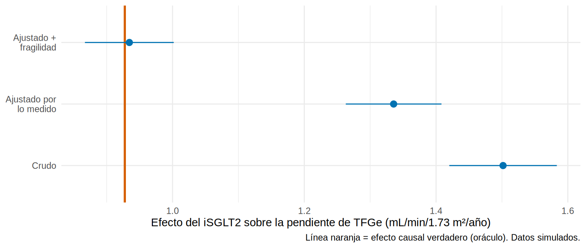

\(\beta_0\) (intercepto): el promedio de \(Y\) cuando todas las \(X\) valen 0 (por eso conviene centrar las variables continuas).
\(\beta_j\): la diferencia promedio de \(Y\) por cada unidad de \(X_j\), manteniendo constantes las demás variables del modelo.
Con una exposición binaria \(X_1\) (iSGLT2 sí/no), \(\beta_1\) es la diferencia de medias ajustada.
En nefrología se usa para desenlaces como la pendiente de TFGe, la creatinina a los 12 meses, la presión arterial, el peso seco o la hemoglobina.
library(tidyverse)library(broom)library(marginaleffects)source("R/funciones_epi.R")ckd<-read_csv("Bases/ckd_isglt2.csv")|>mutate(sexo =factor(sexo, levels =c("Mujer", "Hombre")), luacr =log(uacr))## "Oráculo" (solo existe porque simulamos): contiene el efecto verdadero de cada pacienteoraculo<-read_csv("Bases/ckd_isglt2_oraculo.csv")ate_verdadero<-mean(oraculo$ite)ate_verdadero
[1] 0.927542
El efecto causal verdadero promedio del iSGLT2 sobre la pendiente de TFGe es 0.93 mL/min/1.73 m²/año (la columna ite del oráculo; en la vida real nunca se conoce). Veamos qué estima cada modelo.
Modelo simple (crudo)
m0<-lm(pendiente_tfg~isglt2, data =ckd)tidy(m0, conf.int =TRUE)
El coeficiente de isglt2 es la diferencia de medias entre tratados y no tratados (idéntica a la de una prueba t de varianzas iguales). Es la estimación cruda: sin ajustar por nada.
Agregamos las covariables medidas. Reescalamos la edad (por 10 años) para que su coeficiente sea interpretable, y usamos luacr (logaritmo de la UACR) porque la UACR es muy asimétrica:
m1<-lm(pendiente_tfg~isglt2+I(edad/10)+sexo+hba1c+pas+tfg_basal+luacr+ecv, data =ckd)tidy(m1, conf.int =TRUE)|>mutate(across(where(is.numeric), \(x)round(x, 3)))
Los tratados pierden 1.3 mL/min/1.73 m²/año menos, a igual edad, sexo, HbA1c, PAS, TFGe, albuminuria y ECV
I(edad/10)
≈ −0.45
Por cada 10 años más de edad, la pendiente es 0.45 peor
hba1c
≈ −0.25
Por cada punto más de HbA1c, 0.25 peor
pas
≈ −0.02
Por cada mmHg más de PAS, 0.02 peor (0.2 por cada 10 mmHg)
tfg_basal
≈ +0.015
A mayor TFGe basal, la pendiente es algo menos negativa
luacr
≈ −0.23
Cada aumento de 1 en ln(UACR) (UACR × 2.7) empeora la pendiente 0.23
ecv
≈ −0.5
Con ECV previa, 0.5 peor
sexoHombre
≈ 0
Sin diferencia relevante
Tip💡 Tip práctico: escalar para interpretar mejor
Edad por 10 años, PAS por 10 mmHg, UACR en logaritmo base 2 (log2(uacr): cada unidad = duplicar la UACR) hacen los coeficientes más fáciles de leer que “por 1 año” o “por 1 mg/g”.
Variables categóricas: la categoría de referencia es la primera del factor; cámbiala con relevel() o fct_relevel() para comparar contra el grupo que tiene sentido clínico.
R² = fracción de la variación de \(Y\) explicada por el modelo. Aquí ≈ 0.48.
sigma (error residual) = desviación típica de lo que el modelo no explica, en unidades de \(Y\).
Un R² alto no significa que el modelo sea causalmente correcto, ni un R² bajo que no sirva: para estimar el efecto de la exposición, importa el sesgo de ese coeficiente, no el R².
¿Qué hace el ajuste? Crudo vs. ajustado vs. verdad
Comparemos el coeficiente del iSGLT2 en tres modelos con la verdad (0.93). El tercer modelo incluye la fragilidad, que en la vida real no se mide:
# A tibble: 4 × 4
modelo estimate conf.low conf.high
<chr> <dbl> <dbl> <dbl>
1 Crudo (solo iSGLT2) 1.5 1.42 1.58
2 Ajustado por lo medido 1.34 1.26 1.41
3 Ajustado + fragilidad (no medible) 0.93 0.87 1
4 Verdad (oráculo) 0.93 NA NA
tibble( modelo =factor(c("Crudo", "Ajustado por\nlo medido", "Ajustado +\nfragilidad"), levels =c("Crudo", "Ajustado por\nlo medido", "Ajustado +\nfragilidad")), est =c(coef(m0)["isglt2"], coef(m1)["isglt2"], coef(m2)["isglt2"]), inf =c(confint(m0)["isglt2", 1], confint(m1)["isglt2", 1], confint(m2)["isglt2", 1]), sup =c(confint(m0)["isglt2", 2], confint(m1)["isglt2", 2], confint(m2)["isglt2", 2]))|>ggplot(aes(est, modelo, xmin =inf, xmax =sup))+geom_vline(xintercept =ate_verdadero, color ="#D55E00", linewidth =1)+geom_pointrange(color ="#0072B2")+labs(x ="Efecto del iSGLT2 sobre la pendiente de TFGe (mL/min/1.73 m²/año)", y =NULL, caption ="Línea naranja = efecto causal verdadero (oráculo). Datos simulados.")+theme_minimal(base_size =11)

Esto resume la lección del capítulo:
El estimador crudo sobrestima el beneficio (tratados = pacientes de mejor pronóstico).
Ajustar por lo medido lo acerca a la verdad, pero no lo alcanza: queda confusión residual por la fragilidad.
Solo cuando se incluye la variable no medida se recupera la verdad. Un modelo de regresión no puede arreglar lo que no se midió. Para eso sirven el diseño (aleatorización), los análisis de sensibilidad (E-value) o los instrumentos (Cap. 19).
Advertencia⚠️ El modelo no es el DAG
Un coeficiente ajustado es “causal” solo si (1) el conjunto de ajuste cierra todos los caminos de puerta trasera (Cap. 3), (2) no se ajusta por mediadores ni colisionadores, y (3) el modelo está bien especificado. La selección de covariables viene del DAG, no del valor p de cada coeficiente.
Predicciones y efectos promedio: marginaleffects
Un coeficiente solo equivale al efecto promedio cuando el modelo no tiene interacciones ni transformaciones. Una forma general es predecir cada paciente con y sin tratamiento y promediar la diferencia (esto es el efecto marginal promedio, base de la g-fórmula, Cap. 12):
Con este modelo lineal sin interacciones el resultado coincide con el coeficiente. Con modelos con interacción o no lineales (8.3 a 8.5) se diferencian, y avg_comparisons() sigue entregando el efecto promedio en la población.
Importante🎯 En resumen
\(\beta_j\) = diferencia promedio de \(Y\) por unidad de \(X_j\), manteniendo constantes las demás.
Con exposición binaria, el coeficiente es la diferencia de medias ajustada.
Escala las variables (por 10 años, log2(uacr)) y fija la categoría de referencia para interpretar.
Crudo ≠ ajustado: ajustar por lo medido reduce la confusión pero no elimina la no medida.
R² describe el ajuste, no la causalidad; el DAG decide las covariables.
broom::tidy()/glance() ordenan el resultado; avg_comparisons() da el efecto marginal promedio.
Ejercicio
Ajusta un modelo con log2(uacr) en lugar de log(uacr). ¿Cómo cambia la interpretación del coeficiente?
Cambia con relevel(sexo, ref = "Hombre") el sexo de referencia. ¿Qué cambia en la tabla y qué no?
¿Qué pasa con el coeficiente del iSGLT2 si quitasluacr del modelo? ¿Por qué se aleja de la verdad?